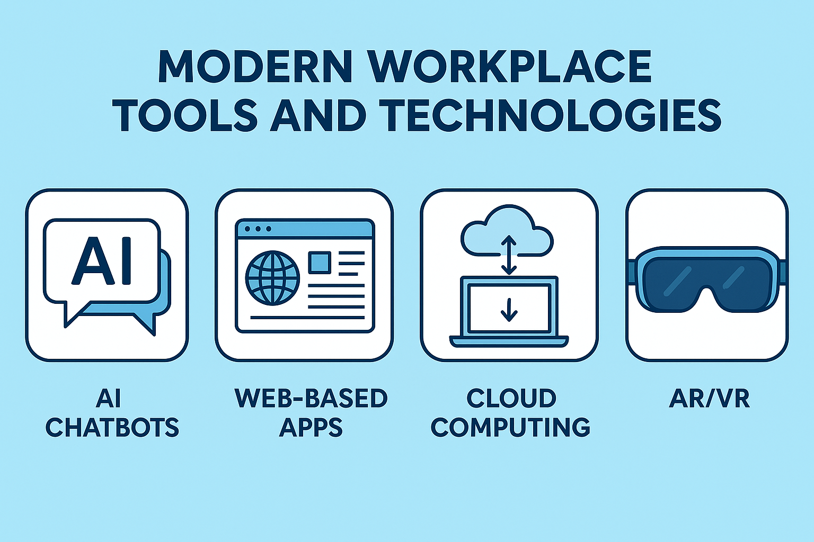

The New Reality of Work
In today's job market, the rapid advancement of technology, particularly artificial intelligence, has dramatically transformed its landscape. While technology once functioned like any other industry, it has now accelerated at an unprecedented rate, leaving many people struggling to keep up.I am one such individual—a Sociology graduate (2014) from India and MS in Information Systems graduate (2024) from US with over six years of professional experience in program management, policy management, and product management. Unfortunately, these three areas of expertise are not sufficient to secure a position in the US job market.
Finding Direction in the AI Ecosystem
Key Insight: As Prof. Léonard Boussioux mentioned, with current innovations, it's not always necessary to have strong coding skills. Instead, the ability to craft effective prompts and possess a clear vision of your goals are crucial skills for success.
The Current AI Tool Landscape
üîç Research & Analytics
OpenAI Deep Research and Perplexity lead the field for comprehensive analysis and insights
üíª Development Solutions
ChatGPT o-series and Claude 3.7 excel in conversational coding. Cursor and Windsurf serve advanced developers
üé® Creative Applications
ChatGPT 4o transforms image generation. RunwayML Gen 4 revolutionizes video creation
üìà Business Operations
Specialized tools streamline email management, presentation creation, and workflow automation
For a comprehensive resource guide, visit: www.leobix.us/genai
The Great Workforce Transformation
The Productivity RevolutionProductivity boost when AI is used within its optimal range
Increase in hiring for AI-skilled workers over 8 years
Jobs potentially displaced globally by 2030
Weighing the Benefits and Challenges
✅ The Advantages
- Increased Efficiency: AI automates repetitive tasks, allowing focus on higher-value work
- Enhanced Decision-Making: Quick analysis of vast datasets
- Cost Reduction: Lower operational expenses and fewer human errors
- Improved Customer Service: Instant AI-powered responses
- Workforce Planning: Predictive capabilities for staffing and trends
⚠️ The Challenges
- Job Displacement: Certain roles face replacement risks
- Privacy Concerns: Large-scale data processing creates security risks
- Bias Issues: AI systems can inherit training data biases
- Over-Dependence: Risk of reduced human critical thinking
- Ethical Challenges: Societal impact considerations
Essential Tools for the Modern Workplace
ü§ù Collaboration Software
Microsoft Teams and Slack for team connectivity
üìã Project Management
Asana, Jira, and ClickUp for task organization
☁️ Cloud Storage
Google Drive, Dropbox, and SharePoint for file sharing
üîí Cybersecurity
LastPass and Norton 360 for data protection